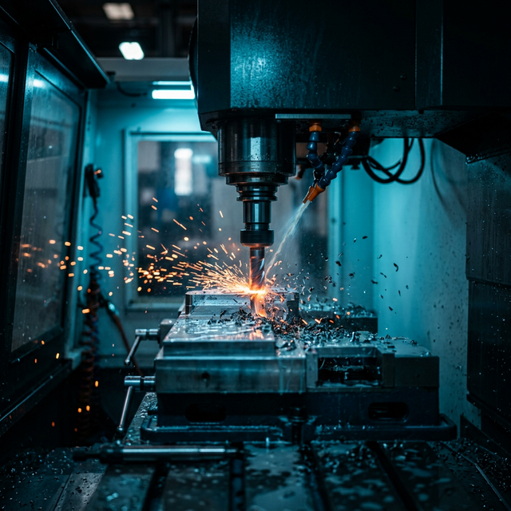

Desarrollo software a la medida para procesos CNC con macros editables. Elimine dependencias de software costoso y lleve la rentabilidad de su planta al límite.
Mecanizado inteligente y macros paramétricas diseñadas para maximizar el rendimiento de controles Fanuc, Haas y Siemens.
Desarrollo de ciclos de perforado y fresado complejos que superan las limitaciones de los ciclos estándar del control.
Elimine el costo recurrente de módulos CAM para procesos repetitivos mediante macros paramétricas de alta eficiencia.
Capacitación para que sus operarios dominen y ajusten las variables, creando una cultura de mejora continua en planta.
Demostración real de una macro de optimización reduciendo tiempos de ciclo y eliminando errores humanos en el proceso de set-up.

Desde el dominio operativo hasta la gerencia de plantas con más de 120 colaboradores. Entiendo la física del corte y la lógica binaria detrás del control numérico.
Grado de Ingeniería a los 55 años, demostrando resiliencia y actualización tecnológica constante.
Diseño de moldes de alta precisión y optimización Lean Manufacturing.
Liderazgo estratégico de plantas industriales, gestión de KPIs, optimización de recursos y dirección de equipos interdisciplinarios de gran escala.
Evolución hacia la automatización total: programación avanzada de centros y tornos CNC, diseño en SolidWorks/AutoCAD y fabricación de herramental crítico.
Inicio de carrera dominando la física del corte en tornos paralelos, fresadoras y procesos de soldadura. La base técnica que garantiza el éxito en lo digital.
Elija el canal de su preferencia para una evaluación técnica inmediata.
Cali, Colombia • Consultoría Global